| FastelaaaPSV - Roda JC 3 maart 2001 |
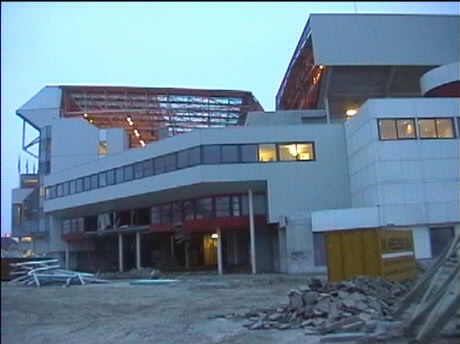
Een van de twee hoeken waar de renovatie nog niet afgerond is.
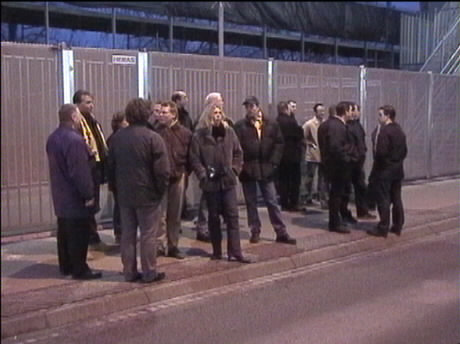
Wachten op de Bakker-bus.
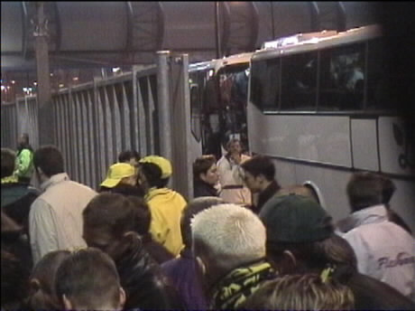
De Bakker- en FP-bussen arriveren. Een FP-bus deed er om
diverse redenen een stuk langer over deze keer ;-)
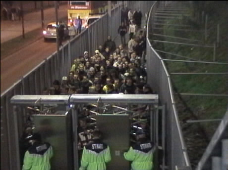
Na drie kwartier koukleumen duurde het nog eens een halfuur
eer we door de tourniquetten waren. Dat was trouwens niet zo
leuk voor die jongens met hun trommels welke over de poort
heengetild moesten worden.
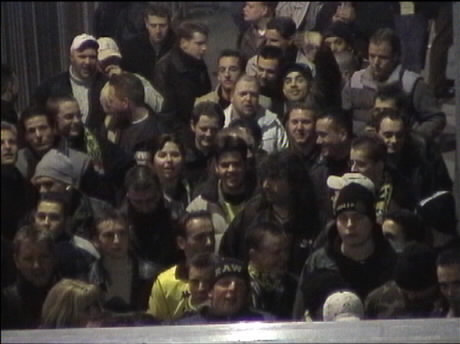
Loemelehe, loemelehe....
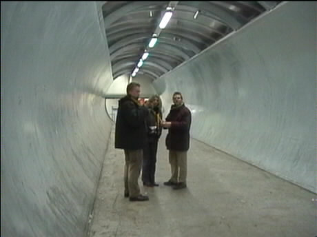
De supporterstunnel.
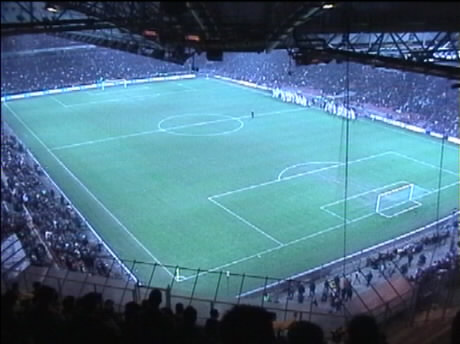
Vanbinnen een mooi stadion, maar bepaald niet gastvriendelijk.
Alleen in de ArenA moet je nog meer treden beklimmen.
Verder werd je scheel gekeken door het net dat er gespannen
was en hadden de stoeltjes geen rugleuning meer. De
hamburgers waren van plastic en er is geen bier te koop voor
de gasten. En dan die meppende stewards.... Verder was het
stadion ondanks de verwarming behoorlijk koud en was het
PSV-publiek erg saai. Pluspunt vormen de videoschermen.
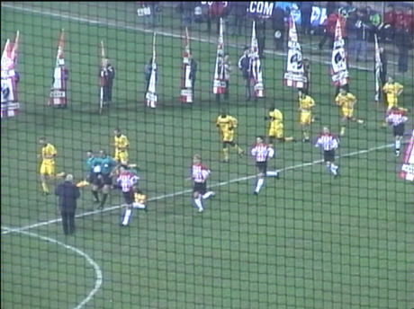
De spelers betreden het veld.
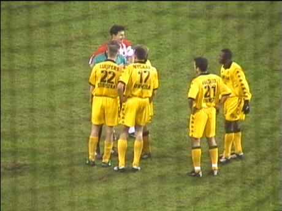
Consternatie over Van Haarens vermeende tweede gele
kaart. Scheidsrechter Van Egmond gaf later toe een foute
conclusie te hebben getrokken. De eerste gele kaart had nl.
voor Luijpers moeten zijn.
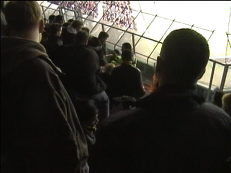
Opstootje in ons vak. Enkele stewards hadden er problemen
mee dat enkele supporters een tree te laag stonden.....
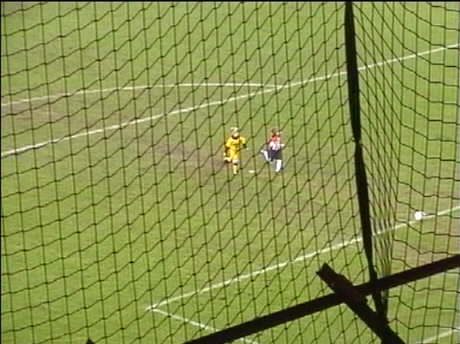
In de pauze waren er shoot-outs. Hier gaat Kiki Plettenberg
op het doel af.
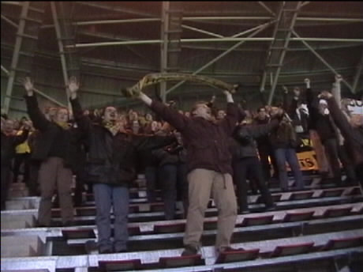
De 0-0 werd gevierd als een overwinning!
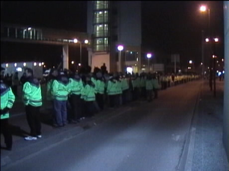
Zover je kon kijken, politie en vooral stewards. Op deze
foto is slechts een gedeelte van de rij te zien.!
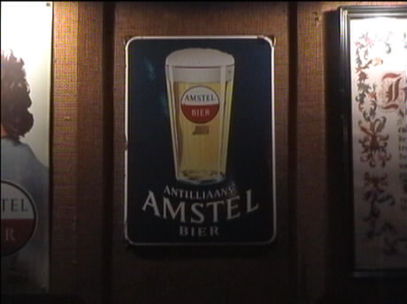
We togen met een paar PSV'ers naar het Wilhelminaplein om
toch nog wat bier binnen te krijgen.
©KPD